Citrix Provisioning 2411 - Server Install
Navigation
This article applies to all 7.x versions of Citrix Provisioning, including 2411, 2402 LTSR, and 2203 LTSR.
- Change Log
- Planning and Versions
- Citrix License Server Version
- Upgrade
- vDisk Storage
-
Installs/Upgrades
- .Net Framework
- Provisioning Console
- Provisioning Server
-
Database Configuration
- Configuration Wizard - New Farm
- Configuration Wizard - Join Farm
- Troubleshooting - Networking Services Don't Work After Reboot
- Firewall
- Disable BIOS Boot Menu
- Private Mode vDisk – No Servers Available for vDisk
- Multi-homed Provisioning Server
- Antivirus Exclusions
- TFTP High Availability
- DHCP Failover
- Health Check
:idea: = Recently Updated
Change Log
- 2025 March 7 - updated Versions section with Citrix Provisioning 2402 LTSR CU2
- 2025 Jan 9 - updated Versions section with Citrix Provisioning 2203 LTSR CU6
- 2024 Dec 4 - updated Versions section and Install sections with Citrix Provisioning 2411
- 2024 April 30 - updated Versions section with Citrix Provisioning 1912 LTSR CU9
- 2023 Mar 20 - updated Versions section and Install sections with Citrix Provisioning 2303
- Join PVS Farm to Citrix Cloud
- 2022 July 29 - updated Versions section with PVS 7.15.45 (from LTSR 7.15 Cumulative Update 9)
Planning and Versions
CTX220651 Best Practices for deploying PVS in multi-geo environments: ensure that Provisioning farms do not span data centers with a network latency that can affect communications between the Provisioning Servers and the SQL database
SQL 2019 is supported with Citrix Provisioning 2003 and newer.
Citrix Provisioning Firewall Rules
The most recent Current Release version of Citrix Provisioning is 2411.

For LTSR CVAD, deploy the Citrix Provisioning version that matches your CVAD version:
- For Citrix Virtual Apps and Desktops (CVAD) 2402 LTSR, deploy Citrix Provisioning 2402 LTSR CU2
- For Citrix Virtual Apps and Desktops (CVAD) 2203 LTSR, deploy Citrix Provisioning 2203 LTSR CU6.
- For Citrix Virtual Apps and Desktops (CVAD) 1912 LTSR, deploy Citrix Provisioning 1912 LTSR Cumulative Update 9 (CU9).

- For XenApp and XenDesktop 7.15 LTSR, deploy 7.15.45 (7.15 LTSR Update 9). 7.15.45 is the version included in XenApp/XenDesktop LTSR 7.15 Cumulative Update 9. Yes, it's confusing.
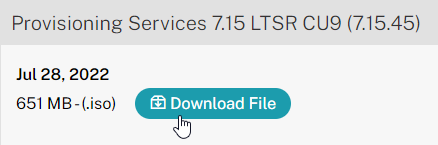
- Also see CTX256773 Powershell SnapIns are not upgraded from PVS 7.15 LTSR CU3 to 7.15 LTSR CU4 after the upgrade is complete
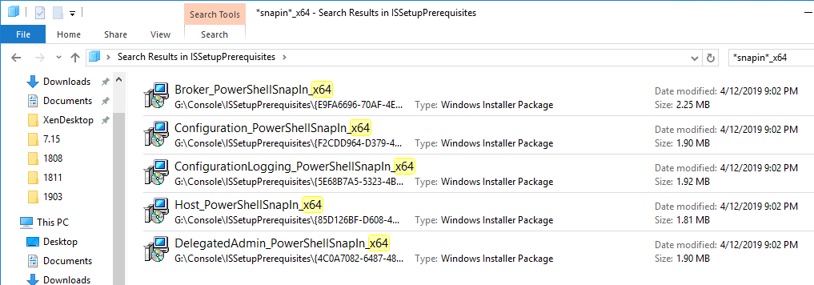
- Also see CTX256773 Powershell SnapIns are not upgraded from PVS 7.15 LTSR CU3 to 7.15 LTSR CU4 after the upgrade is complete


Citrix License Server Version
Upgrade the Citrix Licensing server to the latest version. Citrix now requires the latest License Server version and is configured to upload license telemetry data.
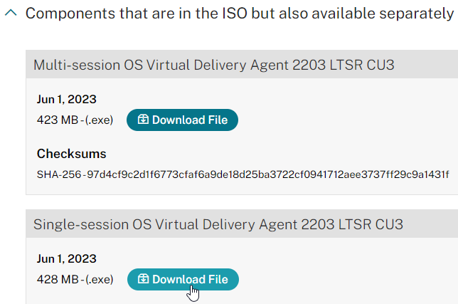
Upgrade
Windows Server 2022 is supported with Citrix Provisioning 2203 and newer.
VMware ESXi 8.0 is supported with Citrix Provisioning 2212 and newer.
SCVMM 2022 is supported with Citrix Provisioning 2203 and newer.
If you are upgrading from an older version of Citrix Provisioning, do the following:
- In-place upgrade the Citrix License Server.
-
In-place upgrade the Provisioning Console.
-
Re-register the Citrix.PVS.snapin.dll snap-in:
-
If upgrading from 7.15.3000 to 7.15.4000, then manually upgrade the snap-ins. See CTX256773 Powershell SnapIns are not upgraded from PVS 7.15 LTSR CU3 to 7.15 LTSR CU4 after the upgrade is complete
-
In-place upgrade the Provisioning Server. If you have two or more Provisioning servers, upgrade one, and then the other. If High Availability is configured correctly, then the Target Devices should move to a different Provisioning server while a Provisioning server is being upgraded.
-
After the first Provisioning server is upgraded, run the Configuration Wizard. You can generally just click Next through the wizard. At the end, you'll be prompted to upgrade the database. Then upgrade the remaining Provisioning servers and run the Config Wizard on each of them too.
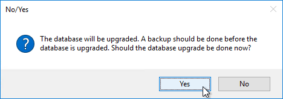
-
Upgrade the Target Device Software inside each vDisk. Don't do this until the Provisioning servers are upgraded (Target Device Software must be same version or older than the Provisioning Servers).
-
If your Target Devices are 7.6.1 or newer, you can create a Maintenance version, boot an Updater Target Device, and in-place upgrade the Target Device Software.
- If your Target Devices are older, then you must reverse image.
-
vDisk Storage
Do the following on both Provisioning Servers. The vDisks will be stored locally on both servers. You must synchronize the files on the two servers: either manually (e.g. Robocopy), or automatically (e.g. DFS Replication).
Create D: Drive
- In the vSphere Web Client, edit the settings for each of the Provisioning server virtual machines.
- On the bottom, use the drop-down list to select New Hard Disk, and click Add.
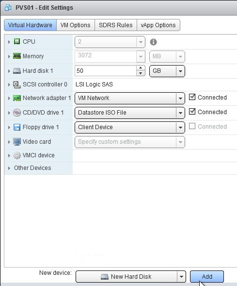
- Expand the New Hard disk by clicking the arrow next to it.
- Change the disk size to 500 GB or higher. It needs to be large enough to store the vDisks. Each full vDisk is 40 GB plus a chain of snapshots. Additional space is needed to merge the chain.
- Feel free to select Thin provision, if desired. Click OK when done.
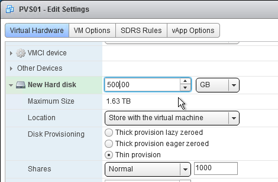
- Login to the session host. Right-click the Start Button, and click Disk Management.
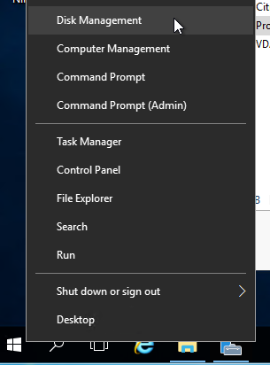
- In the Action menu, click Rescan Disks.
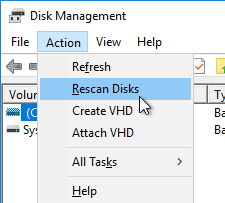
- On the bottom right, right-click the CD-ROM partition, and click **Change Drive Letters and Paths.
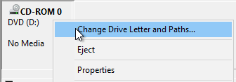
** - Click Change.
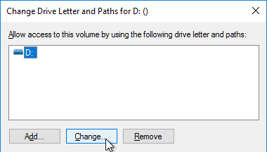
- Change the drive letter to E:, and click OK.
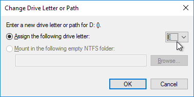
- Click Yes when asked to continue.
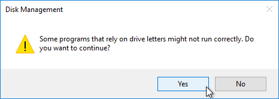
- Right-click Disk 1 and click Online.
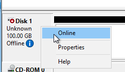
- Right-click Disk 1 and click Initialize Disk.
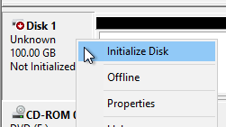
- Click OK to initialize the disk.
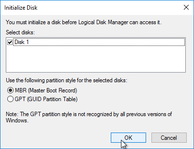
- Right-click the Unallocated space, and click New Simple Volume.
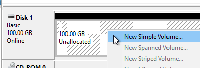
- In the Welcome to the New Simple Volume Wizard page, click Next.
- In the Specify Volume Size page, click Next.
- In the Assign Drive Letter or Path page, select D: and click Next.
- In the Format Partition page, change the Volume label to vDisks and click Next.
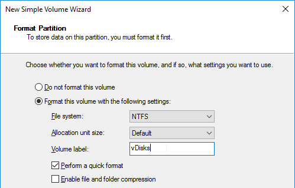
- In the Completing the New Simple Volume Wizard page, click Finish.
- If you see a pop-up asking you to format the disk, click Cancel since Disk Management is already doing that.
vDisk Folders
On the new D: partition, create one folder per Delivery Group. For example, create one called Win10Common, and create another folder called Win10SAP. Each vDisk is composed of several files, so its best to place each vDisk in a separate folder. Each Delivery Group is usually a different vDisk.
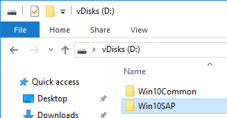
Robocopy Script
Here is a sample robocopy statement to copy vDisk files from one Provisioning server to another. It excludes .lok files and excludes the WriteCache folders.
REM Robocopy from PVS01 to PVS02
REM Deletes files from other server if not present on local server
Robocopy D:\vDisks \\pvs02\d$\vDisks *.vhd *.vhdx *.avhd *.avhdx *.pvp /b /mir /xf *.lok /xd WriteCache /xo
Citrix Blog Post vDisk Replicator Utility has a GUI utility script that can replicate vDisks between Provisioning Sites and between Provisioning Farms.


Service Account
Provisioning Services should run as a domain account that is in the local administrators group on both Provisioning servers. This is required for KMS Licensing.
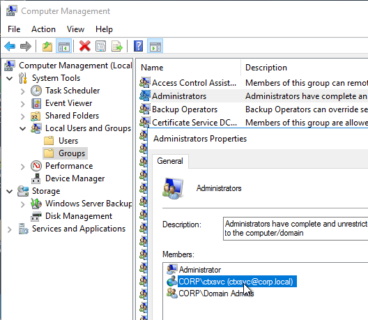
Provisioning Console Install/Upgrade
The installation and administration of Citrix Provisioning 2411 and older (including LTSR versions 2203 and 1912) are essentially identical.
Operating System - Windows Server 2022 is supported with Citrix Provisioning 2203 and newer.
Hypervisor - VMware ESXi 8.0 is supported with Citrix Provisioning 2212 and newer. VMware VSAN 8 is supported with Citrix Provisioning 2311 and newer.
- SCVMM 2022 is supported with Citrix Provisioning 2203 and newer. See CTX131239 Supported Hypervisors for Citrix Virtual Apps and Desktops and Provisioning (Provisioning Services).
BIOS - Citrix Provisioning 2311 and newer no longer support BIOS. See Converting BIOS vDisks to UEFI at Citrix Docs.
If you want to automate the installation and configuration of Citrix Provisioning, see Dennis Span Citrix Provisioning Server unattended installation.
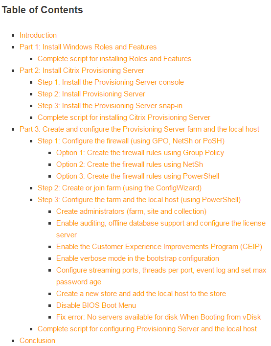
To manually install Provisioning Console, or in-place upgrade the Provisioning Console:
- Go to the downloaded Citrix Provisioning, and in the Console folder, run PVS_Console_x64.exe.
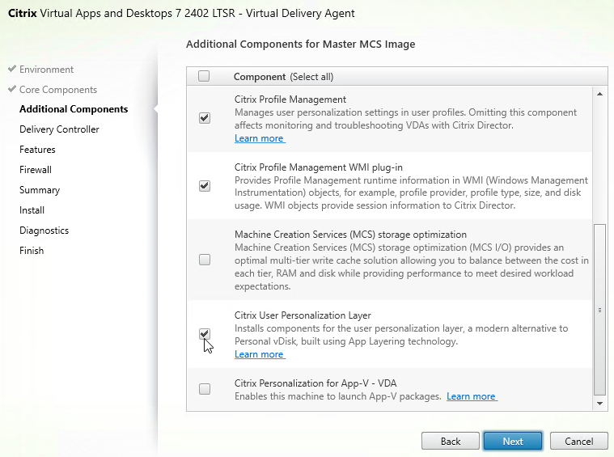
- Click Install.
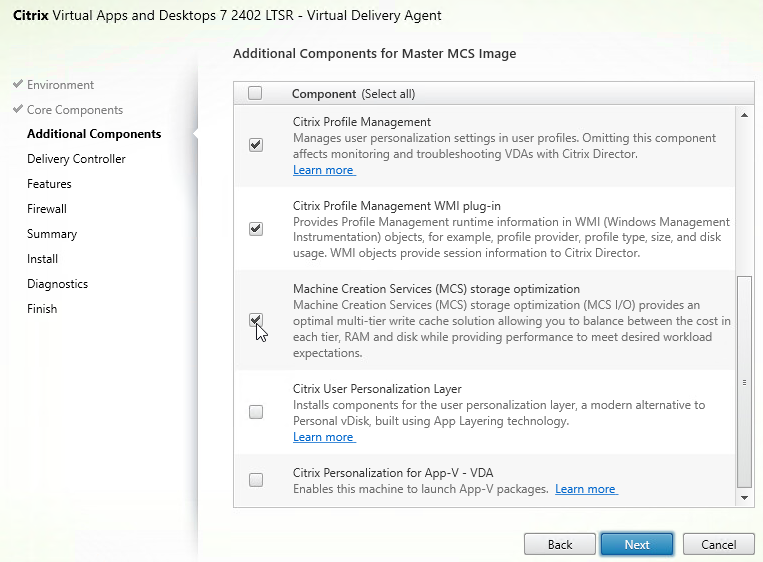
-
If you see the .NET Framework Setup page:
- Check the box next to I have read and accept the license terms, and click Install.
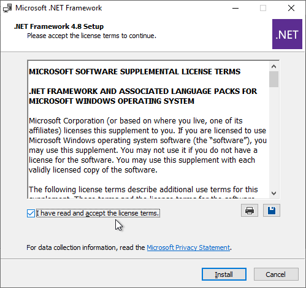
- In the Installation Is Complete page, click Finish.
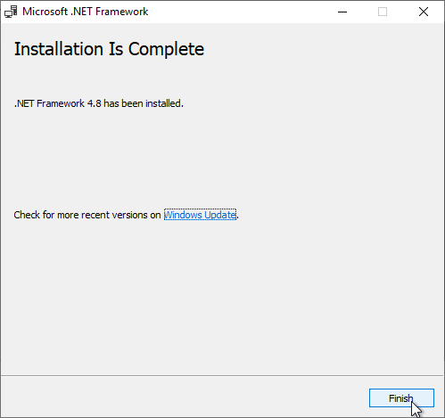
- Click Restart Now.
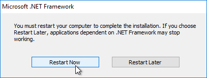
- Restart the PVS_Console_x64.exe installer.

- Click Install.
- Click Yes to reboot when prompted. Then restart the installation.
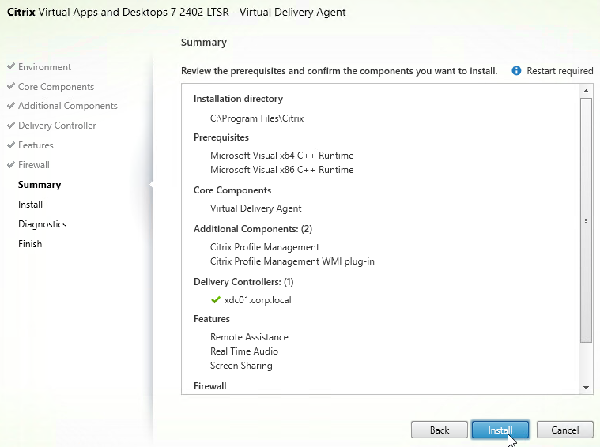
- In the Welcome to the InstallShield Wizard for Citrix Provisioning Console x64 page, click Next.
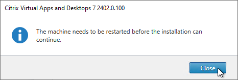
- In the License Agreement page, select I accept the terms, and click Next.
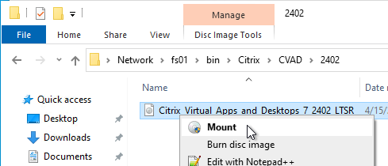
- In the Customer Information page, click Next.
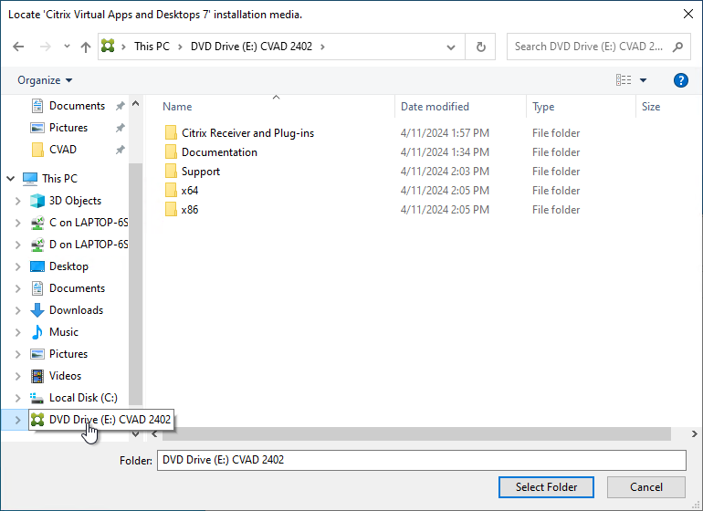
- In the Destination Folder page, click Next.
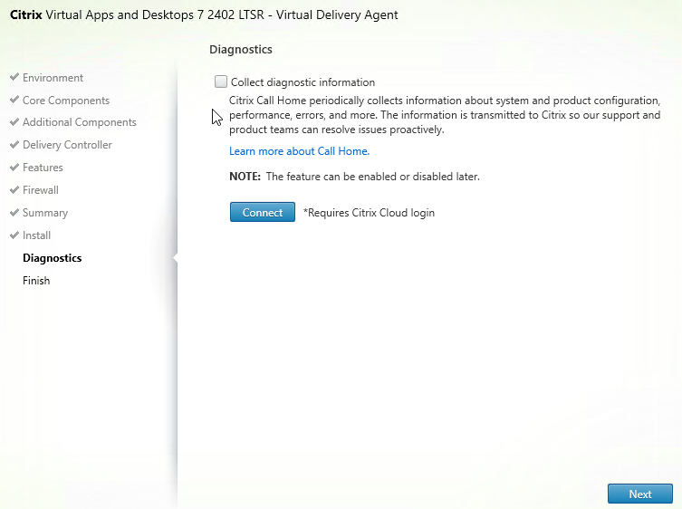
- In the Ready to Install the Program page, click Install.
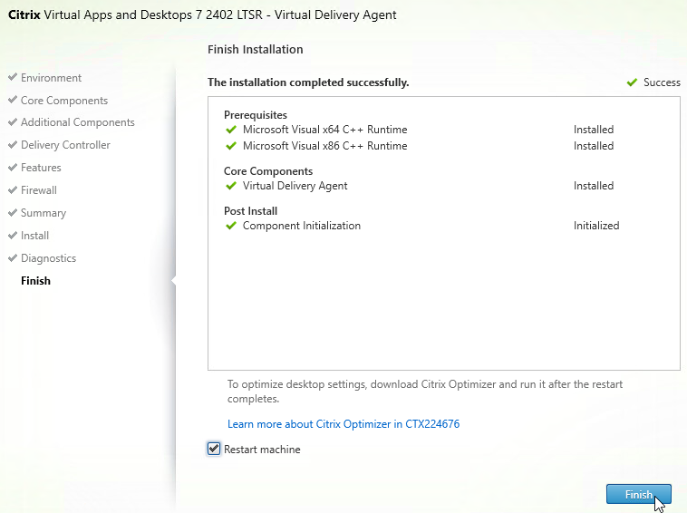
- In the InstallShield Wizard Completed page, click Finish.
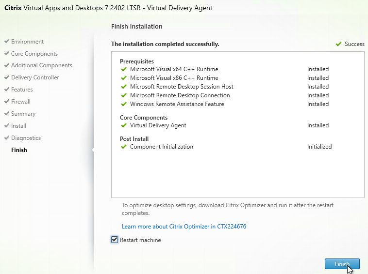
- Click Yes if you are prompted to restart.
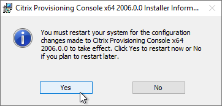
- Check the box next to I have read and accept the license terms, and click Install.
After upgrading the Console, re-register the PowerShell snap-in. This is required for the Citrix App Layering Agent.
"C:\Windows\Microsoft.NET\Framework64\v4.0.30319\InstallUtil.exe" "c:\program files\citrix\provisioning services console\Citrix.PVS.snapin.dll"
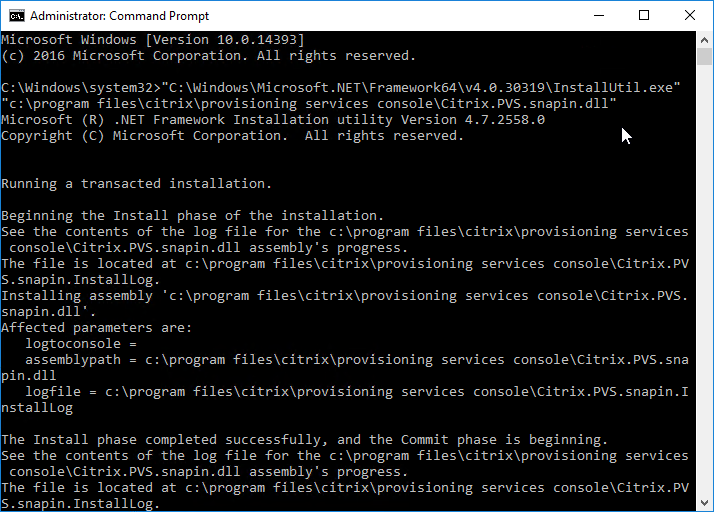
Provisioning Server - Install/Upgrade
The installation and administration of Citrix Provisioning 2411, 1912 LTSR CU9, 7.15.45, 7.6.9 and other 7.x versions are essentially identical.
Operating System - Windows Server 2022 is supported with Citrix Provisioning 2203 and newer.
Hypervisor - VMware ESXi 8.0 is supported with Citrix Provisioning 2212 and newer. VMware VSAN 8 is supported with Citrix Provisioning 2311 and newer.
- SCVMM 2022 is supported with Citrix Provisioning 2203 and newer. See CTX131239 Supported Hypervisors for Citrix Virtual Apps and Desktops and Provisioning (Provisioning Services).
BIOS - Citrix Provisioning 2311 and newer no longer support BIOS. See Converting BIOS vDisks to UEFI at Citrix Docs.
You can in-place upgrade Provisioning Server. The Provisioning Servers must be upgraded before the vDisks' Target Device Software are upgraded. While upgrading one Provisioning Server, all Target Devices are moved to the other Provisioning Server assuming that vDisk High Availability is properly configured.
To install/upgrade Provisioning server:
- If vSphere, make sure the Provisioning server virtual machine Network Adapter Type is VMXNET 3.
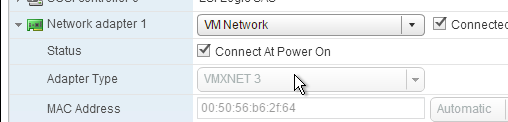
- Go to the downloaded Provisioning ISO, and in the Server folder, run PVS_Server_x64.exe.

- Click Install when asked to install prerequisites.

- Click Yes to reboot. After the restart, relaunch the installer.

- Note: there's a long delay before the installation wizard appears.
- In the Welcome to the Installation Wizard for Citrix Provisioning Server x64 page, click Next.

- In the License Agreement page, select I accept the terms, and click Next.

- In Citrix Provisioning 1811 and newer, you'll see a Default Firewall Ports page. You can optionally select Automatically open all Citrix Provisioning ports in Windows Firewall. If you later use the Citrix Provisioning Console to change the ports, then the Windows Firewall rules need to be adjusted manually since the Citrix Provisioning Console won't do it for you.

- In the Customer Information page, select Anyone who users this computer, and click Next.

- In the Destination Folder page, click Next.

- In the Ready to Install the Program page, click Install.

- In the Installation Wizard Completed page, click Finish.

Database Script
By default, the Citrix Provisioning Configuration Wizard will try to create the database using the credentials of the person that is running the Wizard. This isn’t always feasible. An alternative is to create a script that a DBA can run on the SQL server.
- Go to C:\Program Files\Citrix\Provisioning Services and run DBScript.exe.
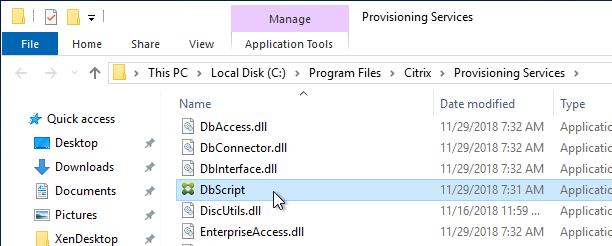
- Change the selection to New database for 2012 or higher.
- Enter a path to save the script file.
- Fill in the other fields.
- Select an Active Directory group containing your Citrix administrators, and click OK.
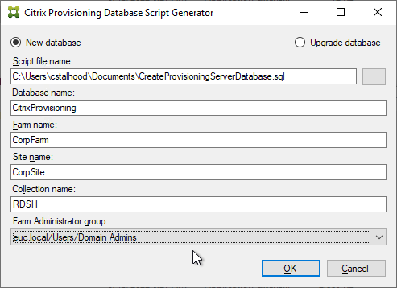
- In SQL Server Management Studio, open the SQL script.
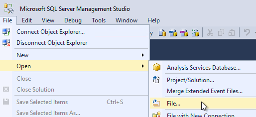
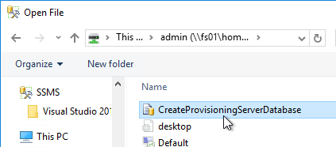
- Execute the script to create the database.
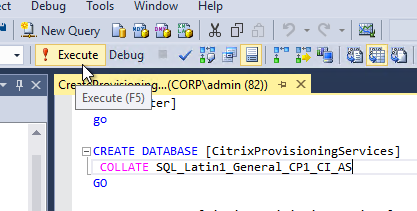
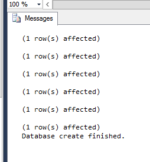
- The person that runs the Citrix Provisioning Configuration Wizard will need db_owner permission to the new Citrix Provisioning database.
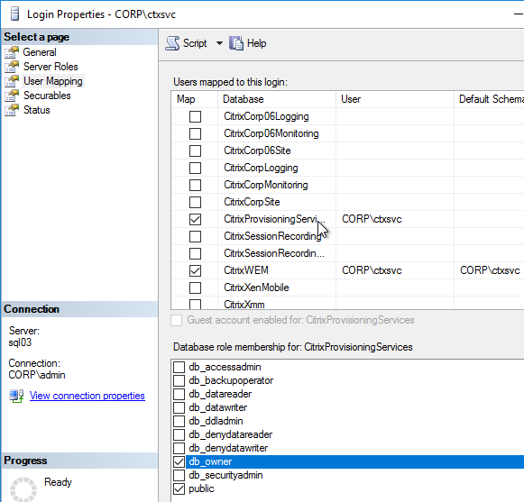
- Create a Windows service account that will run the services on the Citrix Provisioning server. This account must have a SQL login on the SQL server containing the Citrix Provisioning database. The Citrix Provisioning Configuration Wizard will grant this account the correct permissions in the database.
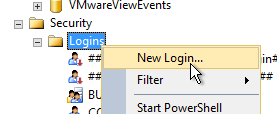
Configuration Wizard – New Farm
- If you used DBScript.exe to pre-create the database, skip to Configuration Wizard - Join Farm.
- Certificate - Joining PVS to CVAD site requires a valid certificate on the PVS server.

- For SQL AlwaysOn Availability Group, see CTX201203 SQL Server AlwaysOn Configuration for PVS 7.6. In summary: Use the wizard to create the database instance. In SQL, create the Availability Group. Then reconfigure Citrix Provisioning Server to point to the SQL AlwaysOn listener.
- The Citrix Provisioning Configuration Wizard launches automatically. If the database wasn't pre-created, then the person running the wizard must have dbcreator and securityadmin roles on the SQL Server. If true, click Next. If not true, then cancel the wizard and launch it as somebody that does have those roles.
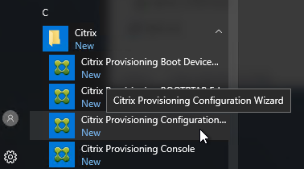
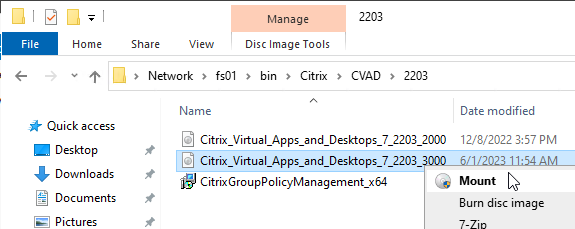
- The DHCP Services page appears. DHCP is typically hosted on a different server so select The service that runs on another computer. It is also possible to install DHCP on the Provisioning Servers. Click Next.
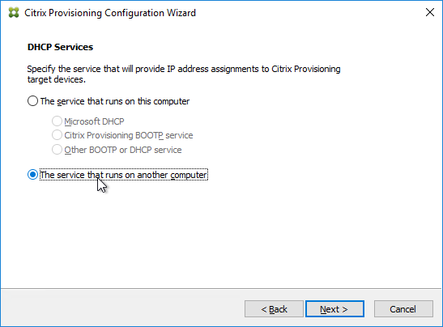
- In the PXE Services page, if you intend to use Boot Device Manager (BDM or ISO) instead of PXE, then change the selection to The service that runs on another computer, which disables the PXE service.
- If your Target Devices and Provisioning Servers are on the same broadcast network, then change the selection to Citrix Provisioning PXE service on this computer.
- Click Next.
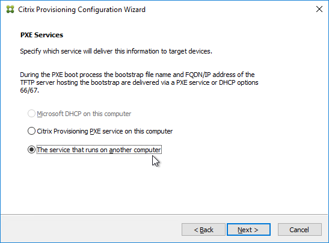
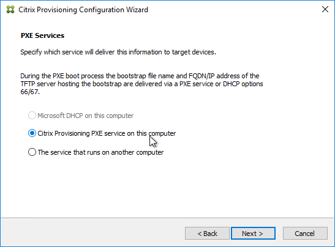
- In the Farm Configuration page, choose Create Farm, and click Next.
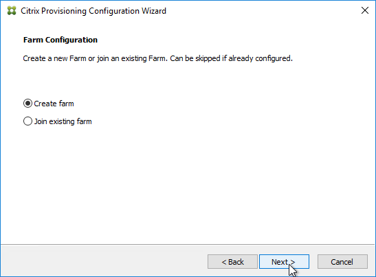
- In the Database Server page, enter the name of the SQL server. Citrix Provisioning 2203 and newer has an option for specifying credentials to the SQL server.
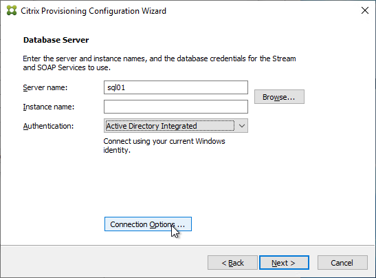
- In Citrix Provisioning 2203 and newer, click the Connection Options button and there's an option for Enable MultiSubnetFailover for SQL Always On. There's also an Optional TCP port field. Click OK and then click Next.
- Older versions of Provisioning have an option for MultiSubnetFailover on the Database Server page. Click Next.
- In Citrix Provisioning 2203 and newer, click the Connection Options button and there's an option for Enable MultiSubnetFailover for SQL Always On. There's also an Optional TCP port field. Click OK and then click Next.
-
In the New Farm page, enter the following:
- Enter a descriptive Database name. Put the word Citrix in the database name so the DBA knows what it is for.
- Enter a descriptive Farm name.
- Enter a descriptive Site name.
- Enter a descriptive Collection name. All of these names can be changed later.
- Select the Active Directory group that will have administrator permissions to Citrix Provisioning, and click Next. If you don't see your group here, select any group you belong to, and you can fix it later in the console.
- In the New Store page, browse to one of the vDisk folders, and give the store a name. Then click Next.
- You can optionally join the Provisioning Farm to CVAD or Citrix Cloud so that you can use Web Studio to provision Targets. The CVAD option is available in Citrix Provisioning 2311 and newer.

- Click Yes to join the farm to a CVAD Site.

- In the Citrix Virtual Desktops Controller page, click Next.

- Later in the wizard, an SSL certificate is required on the PVS server.
- The Registration tab in Provisioning Console > Farm Properties shows the status of CVAD Site registration.
- In the License Server page, enter the name of your Citrix license server, check the box next to Validate license server communication, and click Next.
- Click Yes to trust the license server certificate.
- In the User account page, notice it defaults to Network service account. This won’t work with KMS licensing so change it to Specified user account. Enter credentials for an account that is a local administrator on all Provisioning servers, and click Next. Note: Provisioning 7.16 and newer support Group Managed Service Accounts.

- In the Active Directory Computer Account Password page, check the box, and click Next.
- In the Network Communications page, click Next.
- In the TFTP Option and Bootstrap Location page, check the box, and click Next.
- In the Stream Servers Boot List page, click Advanced.
- Check the box next to Verbose mode, click OK, and then click Next.
- If Provisioning 7.12 or newer, in the SSL Configuration page, click Next.

- If you see the Problem Report Configuration page, enter your MyCitrix credentials and click Next.
- In the Finish page, click Finish.
- If you are upgrading, then you might be asked to upgrade the database. Click Yes.
- Click OK if you see the firewall message.
- In the Finish page, click Done.
From Running the Configuration Wizard silently at Citrix Docs: Now that you have a configured server, you can run **"C:\Program Files\Citrix\Provisioning Services\ConfigWizard.exe" /s** to produce an .ans file at **"C:\ProgramData\Citrix\Provisioning Services\ConfigWizard.ans"**. This .ans file can be modified and copied to additional Provisioning servers. **"C:\Program Files\Citrix\Provisioning Services\ConfigWizard.exe" /a** reads the .ans file and applies the configuration silently.
Configuration Wizard – Join Farm
- The Configuration Wizard launches automatically.
-
There are two methods of handling SQL permissions:
- The person running the wizard must have db_owner on the database and securityadmin role on the SQL Server. This allows the wizard to add the service account to SQL logins and grant it access to the database.
- Or the person running the wizard can be limited to just db_owner permission to the database. The service account must be added manually to SQL logins by a DBA.
- The DHCP Services page appears. DHCP is typically hosted on a different server so select The service that runs on another computer. It is also possible to install DHCP on the Provisioning Servers. Click Next.
- In the PXE Services page, if you intend to use Boot Device Manager (BDM or ISO) instead of PXE, then change the selection to The service that runs on another computer, which disables the PXE service.
- If your Target Devices and Provisioning Servers are on the same broadcast network, then change the selection to Citrix Provisioning PXE service on this computer.
- Click Next.
- In the Farm Configuration page, click Join existing farm.
- In the Database Server page, enter the name of the SQL server. Citrix Provisioning 2203 and newer has an option for specifying credentials to the SQL server.
- In Citrix Provisioning 2203 and newer, click the Connection Options button and there's an option for Enable MultiSubnetFailover for SQL Always On. There's also an Optional TCP port field. Click OK and then click Next.
- Older versions of Provisioning have an option for MultiSubnetFailover on the Database Server page. Click Next.
- In the Existing Farm page, select the database, and click Next.
- In the Site page, select an existing site, and click Next.
- If you used the script to create the database, then there probably are no stores defined. Do so now.
- Otherwise, in the New Store page, select the existing store, and click Next.
- In the License Server page, click Next.
- In the User account page, notice it defaults to Network service account. This won’t work with KMS licensing so change it to Specified user account. Enter credentials for an account that is a local administrator on all Provisioning servers, and click Next. Note: Provisioning 7.16 and newer support Group Managed Service Accounts.
- In the Active Directory Computer Account Password page, check the box, and click Next.
- In the Network Communications page, click Next.
- In the TFTP Option and Bootstrap Location page, check the box, and click Next.
- In the Stream Servers Boot List page, click Advanced.
- Check the box next to Verbose mode, click OK, and then click Next.
- If Provisioning 7.12 or newer, in the Soap SSL Configuration page, click Next.
- If Provisioning 7.11 or newer, in the Problem Report Configuration page, enter your MyCitrix credentials, and click Next.
- In the Finish page, click Finish.
- Click OK if you see the firewall message.
- In the Finish page, click Done.

Troubleshooting - Networking Services Don't Work After Reboot
If your PXE service or TFTP service does not work after a reboot of the Provisioning server, do the following:
- One option is to set the Citrix PVS PXE Service, Citrix PVS TFTP Service, and Citrix PVS Two-stage boot Service to Automatic (Delayed Start).
-
The TFTP and Two-stage Boot services can be delayed by setting registry keys.
- Keys = HKLM\System\CurrentControlSet\services\BNTFTP (and PVSTSB)\Parameters
- Value = InitTimeoutSec (DWORD). 1 – 4 seconds. Default is 1.
- Value = MaxBindRetry (DWORD). 5 – 20 retries. Default is 5.
Disable Firewall
Disable the Windows Firewall to allow communication to all Citrix Provisioning Server ports. Or, see Citrix Provisioning Firewall Rules and manually open all required ports. If you change the ports in the Citrix Provisioning Console, then you'll need to adjust the Windows Firewall rules accordingly.
- In Server Manager, click Tools, and click Windows Firewall with Advanced Security.
- Click Windows Firewall Properties.
- On the Domain Profile tab, change the Firewall state to Off.
Disable BIOS Boot Menu
The versioning process in Citrix Provisioning will present a boot menu when booting any version except Production.

- To avoid this, create the DWORD registry value HKLM\Software\Citrix\ProvisioningServices\StreamProcess\SkipBootMenu on both Provisioning Servers and set it to 1. Note: the location of this key changed in Provisioning Services 7.0 and newer.
- Then restart the Citrix PVS Stream Service.
Private Mode vDisk – No Servers Available for vDisk
Citrix CTX200233 - Error: "No servers available for disk": When you set a vDisk to Private Image mode (or new Maintenance version), if the Target Device is not connected to the server that contains the vDisk then you might see a message saying “No Servers Available for vDisk”.
- To avoid this, create the DWORD registry value HKLM\Software\Citrix\ProvisioningServices\StreamProcess\SkipRIMSForPrivate on both Provisioning Servers and set it to 1. Note: the location of this key changed in Provisioning Services 7.0.
- Then restart the Citrix PVS Stream Service.
Multi-Homed Provisioning Server
From slide 20 of http://www.slideshare.net/davidmcg/implementing-and-troubleshooting-pvs:, Multi-homed Provisioning server is not recommended but if you insist, and if running Provisioning 6.1 or older, configure the following. Provisioning 7.7 configuration wizard should have asked you for the management NIC.
-
HKLM\Software\Citrix\ProvisioningServices\IPC
- New Reg_Sz (string) named IPv4Address with the IP of the NIC for IPC
-
HKLM\Software\Citrix\ProvisioningServices\Manager
-
New Reg_Sz (string) named GeneralInetAddr with the IP of the NIC and port
- e.g. 10.1.1.2:6909
Citrix 133877 Timeout Error 4002 in Provisioning Server Console after Clicking "Show Connected Devices_"_: when there are multiple streaming NICs assigned to the Provisioning Server, when Show Connected Devices was clicked in the Provisioning console, the following symptoms might be experienced: Server timeout error 4002, unusual delay of 3 to 4 minutes to list the connected devices, or Provisioning console stops responding. Complete the following to resolve the issue:
- On the Provisioning Server machine, under HKLM\software\citrix\provisioningServices\Manager key, create registry DWORD RelayedRequestReplyTimeoutMilliseconds, and set it to 50 ms (Decimal).
- Create a DWORD RelayedRequestTryTimes, and set it to 1.
- Open the Provisioning Server console and test by selecting the Show Connected Devices command.
Antivirus Exclusions
Citrix’s Recommended Antivirus Exclusions
Endpoint Security, Antivirus, and Antimalware Best Practices at Citrix Docs TechZone contains a list of recommended exclusions for Citrix Provisioning.
Citrix Blog Post Citrix Recommended Antivirus Exclusions: the goal here is to provide you with a consolidated list of recommended antivirus exclusions for your Citrix virtualization environment focused on the key processes, folders, and files that we have seen cause issues in the field:
- Set real-time scanning to scan local drives only and not network drives
- Disable scan on boot
- Remove any unnecessary antivirus related entries from the Run key
- Exclude the pagefile(s) from being scanned
- Exclude Windows event logs from being scanned
- Exclude IIS log files from being scanned
See the Blog Post for exclusions for each Citrix component/product including: StoreFront, VDA, Controller, and Provisioning. The Blog Post also has links to additional KB articles on antivirus.
Microsoft’s virus scanning recommendations
(e.g. exclude group policy files) - http://support.microsoft.com/kb/822158.
TFTP High Availability
BIOS machines have multiple methods of booting into PVS:
- PXE (network boot) on same subnet as Citrix Provisioning Servers.
- PXE (network boot) on different subnet as Citrix Provisioning Servers. DHCP Scope Options 66 and 67 required.
- Boot ISO created by Citrix Provisioning Boot Device Manager.
- Boot partition created by the Citrix Provisioning Virtual Desktops Setup Wizard.
EFI/UEFI machines have two methods of booting into PVS:
- PXE (network boot) on same subnet as Citrix Provisioning Servers. DHCP Scope Option 11 required.
- PXE (network boot) on different subnet as Citrix Provisioning Servers. DHCP Scope Options 66, 67, and 11 required.
If PXE booting on same subnet as Provisioning Servers, then make sure the PXE service is running on the Citrix Provisioning Servers. When your target device boots, it will broadcast a PXE Request message to the entire subnet. One of the Provisioning Servers PXE services will reply with the IP address of the TFTP service on the local Provisioning Server.
- If EFI/UEFI, the bootstrap file cannot be modified to contain the Provisioning Server addresses so you must instead configure DHCP Scope Option 11 with those addresses. See CTX208519 Configuring PVS for High Availability with UEFI Booting and PXE service.
If your Target Devices are not on the same VLAN/subnet as the Provisioning Servers, then use Boot ISO or Boot Partition.
HA for DHCP Scope Options:
- DHCP Scope Option 66 (TFTP Server address) only supports a single address. For High Availability, either DNS Round Robin your TFTP servers, or configure Citrix ADC to load balance TFTP. TFTP service runs on the Citrix Provisioning Servers.
- Citrix CTX131954 Implementation Guide - High Availability for TFTP
- NetScaler has native load balancing support for TFTP protocol.
- For EFI/UEFI, for DHCP Scope Option 67, see Unified Extensible Firmware Interface (UEFI) pre-boot environments at Citrix Docs for the correct file name.
DHCP Failover
The DHCP infrastructure must be highly available. And session hosts should be configured with DHCP Reservations. With multiple DHCP servers, any reservation should be created on all DHCP servers hosting the same DHCP scope. The easiest way to accomplish this is with the DHCP Failover feature in Windows Server 2012 and newer.
- Build two DHCP servers on Windows Server 2012 or newer.
- Create a scope for the Provisioning Target Devices.
- Right-click the existing scope, and click Configure Failover.
- In the Introduction to DHCP Failover page, click Next.
- In the Specify the partner server to use for failover page, enter the name of the other DHCP server, and click Next.
- In the Create a new failover relationship page, enter a Shared Secret, and click Next.
- Click Finish.
- Click Close.
Health Check
CTP Sacha Thomet's PowerShell script to view the health/status of the Provisioning environment. Emails an HTML Report. For Provisioning 7.7 and newer, see https://blog.sachathomet.ch/2015/12/29/happy-new-script-pvs-7-7-healthcheck/.